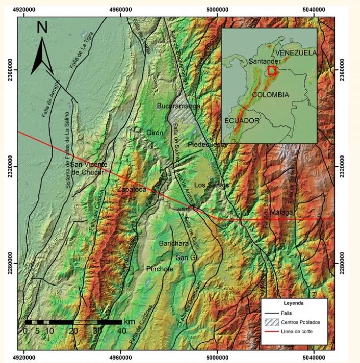

ZonaArea
Del Magdalena Medio a MálagaFrom the Middle Magdalena to Málaga
El corte cruza el Anticlinorio de Los Yariguíes, la Mesa de Los Santos, el Macizo de Santander y la Subcuenca de Málaga, con fallas regionales como La Salina, Suárez y Bucaramanga.
The section crosses the Los Yariguíes Anticlinorium, the Mesa de Los Santos, the Santander Massif and the Málaga Sub-basin, with regional faults such as La Salina, Suárez and Bucaramanga.
